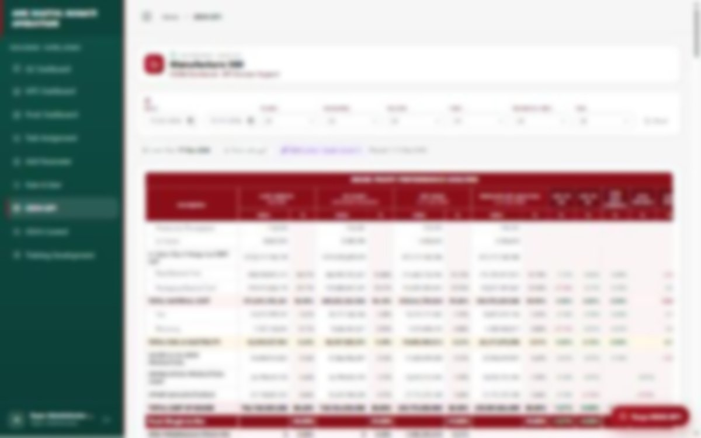
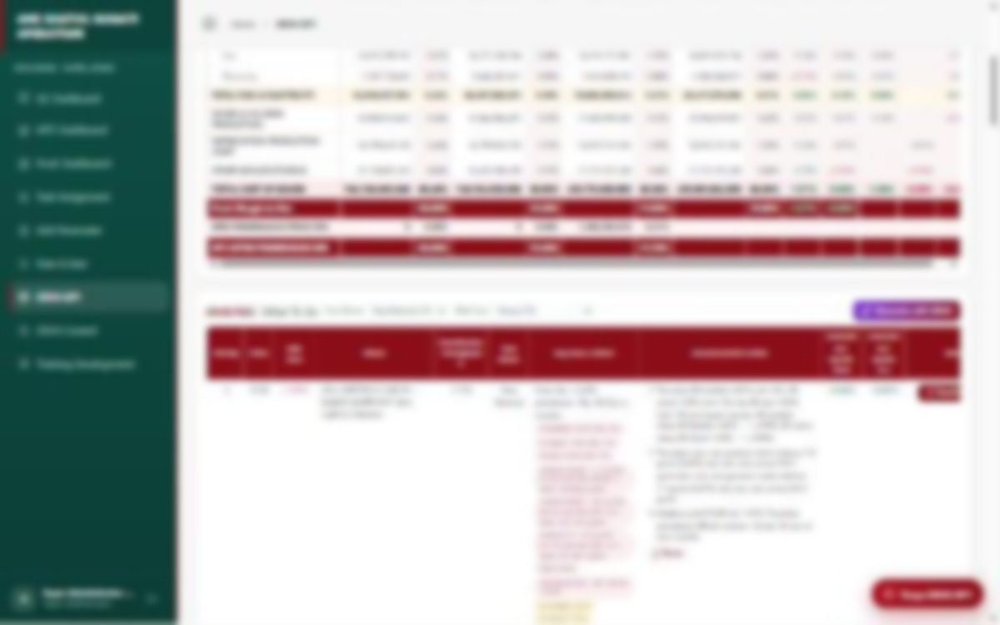

ODIN GP1: turning margin analysis into action
ODIN GP1 is the margin analytics module. It compares production cost with the plan, shows what drove the difference, and ranks where action will have the most impact. An AI assistant drafts the recommended actions.

Blurred: confidential dataCost analysis
One table brings together the plan, the actual result and earlier periods for every cost component, down to the production margin.
Plan versus actual
Each cost component is compared with the plan and the previous period, for any date range and down to product level.
What drove the gap
The difference is broken down into its main drivers, so teams can tell a change in product mix or volume from a change in efficiency.
Prioritised actions
Below the analysis, a ranked list shows where to act first, with the evidence behind each item.

Blurred: confidential dataRanked by impact
Issues are ordered by how much they could improve the margin.
Evidence first
Production measures are compared with their standards and highlighted when they are off.
Clear targets
Each action addresses a measured issue and says what to achieve.
AI assistant
The assistant helps people work with the analysis. It never changes the numbers.
Draft recommendations
Writes recommended actions for each item and reuses earlier results when nothing has changed.
Refine in a chat
Owners can ask questions or ask for a revision. Accepted feedback is kept and used for later recommendations.
Explain the numbers
Answers come from the data itself, not from the model's own assumptions.
Send to the shop floor
Approved actions go to ODIN Control as tasks for the production team.
Guardrails
Every AI output is checked before it is shown. It may only use figures that exist in the data, must avoid guesses, and must address a measured issue. Output that fails a check is replaced by a rule-based recommendation.
Data and my contribution
Data
- Data comes from the company's reporting models, refreshed every day
- Each refresh is reconciled with the official report before it is used
- The app and the assistant read the same data, so the numbers always agree
What I built
The cost analysis and its breakdown, the prioritisation logic, the AI assistant and its guardrails, and the daily data pipeline, together with the tests and documentation.